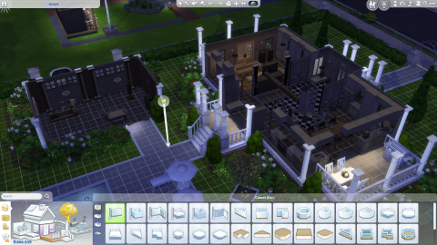
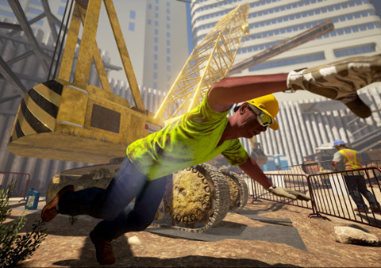

Using digital simulations and gaming in education can lead to a few opportunities for society, which some have been mentioned above – increasing engagements and motivations, developing critical thinking and problem-solving skills, in-depth researching.
But uniquely it also can provide technological literacy, and online education. Technological literacy allows the student to become familiar with technology and digital literacy through the different software applications, user interfaces and virtual environments.
This allows them to keep up with the technological advancements that are rapidly evolving in the modern world. Technology has allowed us to implement educational opportunities to online platforms which connects the gap for education around the world. Students can trial experiential situations with another student from a different region which allows a wider view in perspectives.
Digital Simulations and serious gaming have also proven to be of use when attempting to apply features of learned materials to realistic situations. (Baeker, R. M. 2019). Take per exemplar the Sims and SimCity franchise by Electronic Arts.
Figure 1. Screenshot of The Sims 4 gameplay. (own photo).
As digital simulations are computer programs designed to replicate realistic situations, this allows for the substitution of practicing these skills in-person. Some concepts being relatively harder to grasp than others and require advanced programs in order to aid the student to understand. (Carrie Lewis Miller, 2021). Architecture students are entitled to build physical models and structures for their work. This comes at the cost of materials, time, effort and space to store these models. Ben Knight of the University of New South Wales reports on how simulation games such as The Sims can help with this. Although there is no direct substitution in the form of traditional architectural training, simulation games play a huge role teaching newcomers the basics. Software simulations allow users to view their construction from several different angles, allowing for the same potential as real-life models. Further creating vague duplicates for several different materials, as in Minecraft you can replace a brick block with another material that is better suited for the design. (Ben Knight, 2020) Platformers such as the Sims also allow the user to take into consideration the cost of materials. Taking into consideration the building processes within the Sims, every purchase made is worth a certain currency. Although in-game costs may not be applicable to real-world conditions today, they still allow the user to consider the concepts of budgeting. The sandbox SimCity excels at this. It forces the user to undergo role-playing. Here they pretend to be a figure of high authority while controlling a residential space. This pushes the user to develop an understanding of different business concepts such as providing utilities and services, managing taxes rates and building with the future in mind. Several business educators take advantage of virtual realities to teach finance, negotiation, strategies and decision-making to students. (Baeker, R. M. 2019). Some advanced simulations are also incorporated to calculate the statistical behaviors of water within dams and the growth of microorganisms. This allows for the concepts of chemistry and physics to be studied within a virtual environment that can closely be replicated within the real world. (Baeker, R. M. 2019).
Figure 2. Image of The Situation Engine Training Programme. Retrieved from https://newsroom.unsw.edu.au/news/art-architecture-design/gaming-technology-transforms-construction-safety-training
As previously mentioned, simulations excel in mimicking reality. This was used to an advantage within the construction sector. Not only aiding in visualizing building projects, but simulations also help in enforcing safety precautions. These precautions built to prevent any casualties from occurring as Safe Work Australia has reported near to 400 deaths on construction sites from 2003 up until 2013. A program made within the University of New South Wales gave construction workers the opportunity to experience a virtual construction site. Here, in this environment that was powered with the use of a computer and oculus virtual reality headset, the workers are able to highlight potential threats in the environment without being put at risk. The program was commended by several companies, Hong Kong’s Gammon construction even highlighting how it helped trainees advance quicker with their training.
Digital platforms also have been proven to increase an individual's motivation. Studies delving into the topic of digital gaming authorship have found that conventionally, there has been an increase in students’ learning motivation and attitude. (Ya-Ting Carolyn Yang & Chang, 2013). Digital simulations also provide students with a more direct practical experience. This hands-on approach allows for students to learn through their mistakes, ultimately being more effective than pure theoretical learning. This was proven as stated “Newton says the hyper-real environment engages workers and students more effectively than theoretical tests”. (Fran Strachan, 2016). After constructing their own solutions to problems, they may encounter, students are then equipped with problem solving and logical thinking skills. These skills not only benefit them in their studies, but further aid them to develop different convenient skills. An example of this is the creation of digital platformers. Students are able to openly construct their own projects. Learning how and why to upgrade their works and work around any errors that may occur.
Overall, when constructed correctly, education simulations can further enhance an individual's learning pathway.